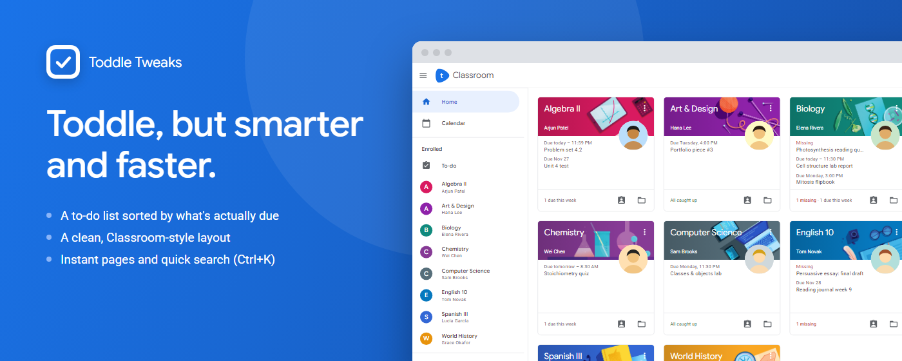

Toddle Tweaks

A free and open-source browser extension for Chrome and Firefox that makes the Toddle learning platform faster and easier: a to-do list sorted by what's actually due, a clean Classroom-style layout, instant pages and quick search.
Firefox: open this page in Firefox, click Add to Firefox, then Continue to installation and Add. It isn't on Firefox Add-ons yet; join toddle-tweaks-firefox to hear when it is.
Verified at Singapore American School so far. MIT License. Not affiliated with Toddle or Google.